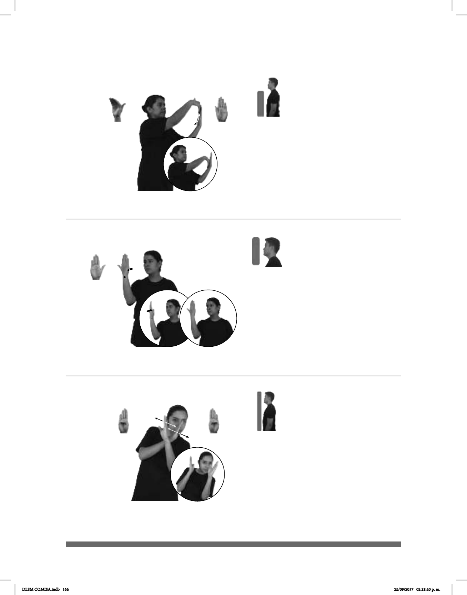

166
Seña: SB
MD B-P.8, MB B-P.6
MD y MB palmas
hacia adentro.
MD inicia sobre la punta
de los dedos de MB y se desliza hacia
su muñeca. MD a la altura del pecho.
MD recto
repetidamente.
sust. f. Instrumento de
diversos tamaños y materiales, que
consta de una pieza rectangular
mezclar, raspar, despegar, etc.
(B-P 166)
pos-TÚ ESPATULA QUITAR CEMENTO
Quita el cemento con la espátula.
Seña: SM
B-P.2
Palma hacia adentro.
A la altura del rostro del
lado derecho.
La muñeca y el
antebrazo hacen girar la mano.
Rotación de
cabeza hacia la derecha.
Simula la acción de
verse en el espejo.
sust. m. Objeto en el que se
imágenes; generalmente está hecho de
una placa de vidrio cubierta de
mercurio en una de sus caras.
Seña: SB
MD y MB B-P.1
MD palma hacia la
izquierda. MB palma hacia la derecha.
MD y MB a la altura del
rostro.
Las manos cruzan hacia el
centro y llegan a un punto cercano
repetidamente.
Cuerpo inclinado
hacia la izquierda.
Simula la acción de
observar a alguien y esconderse.
a alguien con atención y sin que se note.
(B-P 168)
(B-P 167) Espejo
NIÑOS pro-ELLOS ESPIAR JUGAR
Los niños juegan a espiar.
ESPEJO pro-YO REGALAR
Yo regalo un espejo.
DLSM COMISA.indb 166 25/09/2017 02:28:40 p. m.